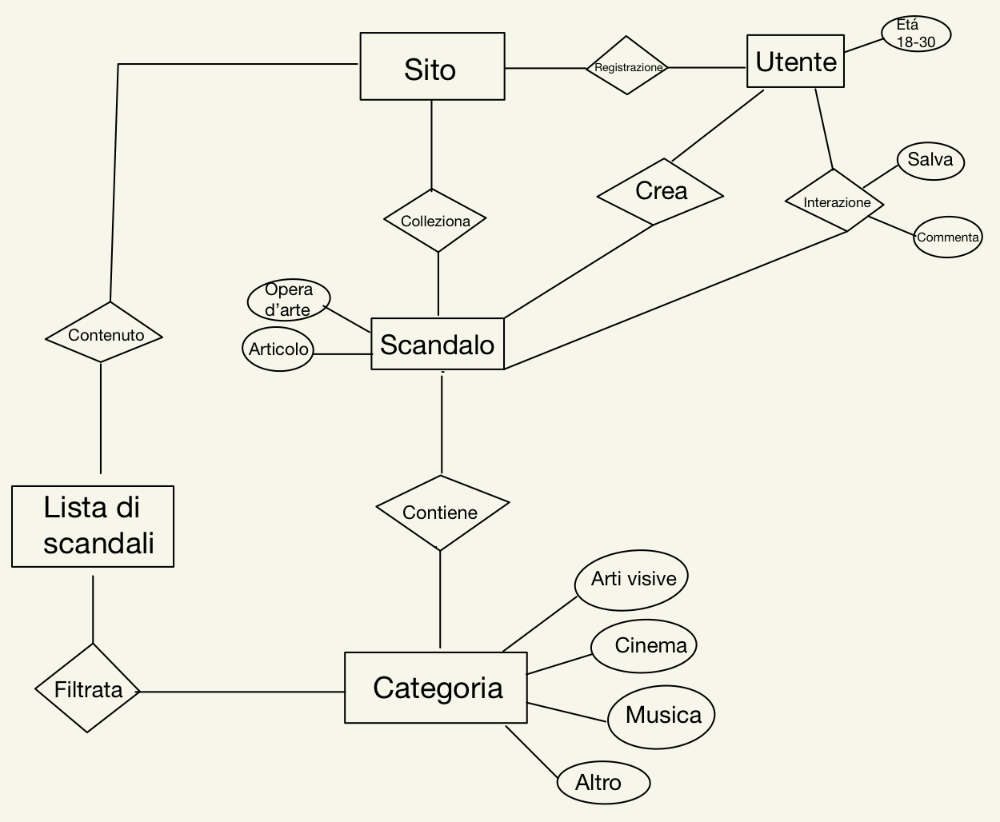
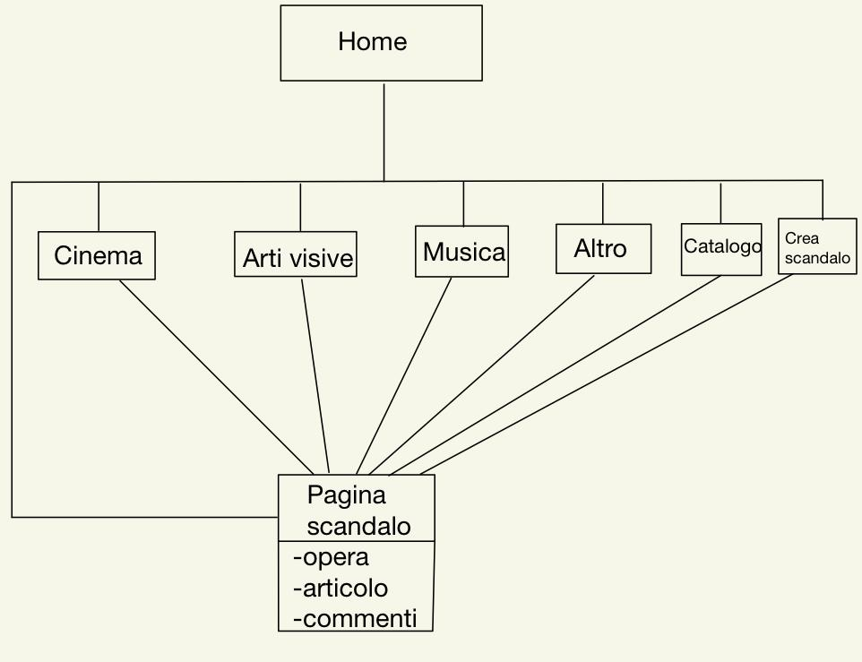
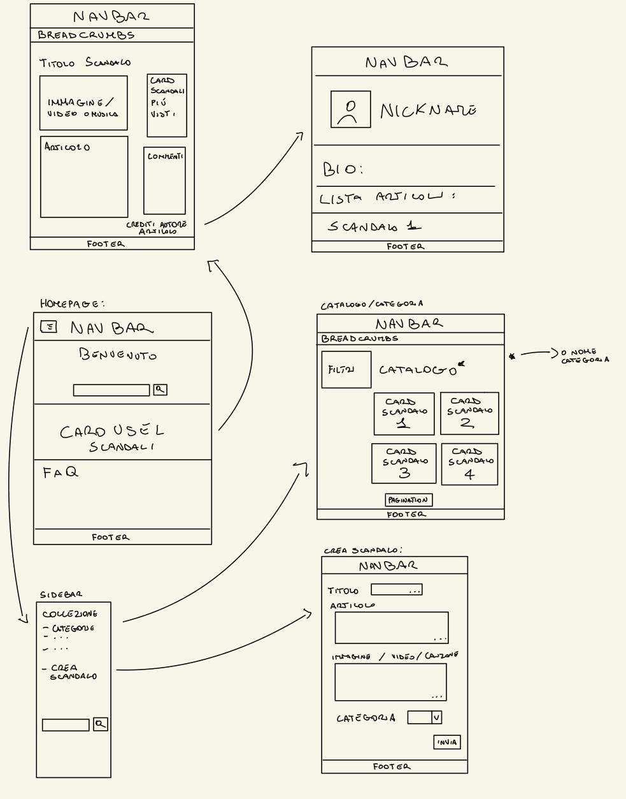

Web Project Plan
1. Brief
1.1 Finalità e obiettivi del progetto
Il progetto mira a creare una risorsa interattiva e multimediale che esplori le rivoluzioni sessuali nell'arte, offrendo una panoramica approfondita e interdisciplinare delle trasformazioni culturali e artistiche legate alla sessualità. L'obiettivo è quello di fornire agli utenti una piattaforma completa e coinvolgente per esplorare le diverse rivoluzioni della sessualità nell’arte, chiamate nel sito “scandali”, attraverso testi, immagini, video e altre risorse attraverso il quale si nota un’evoluzione del pensiero umano attraverso vari scandali nel mondo artistico. Coinvolge l’utente dando la possibilità di suggerire scandali e scrivere articoli da pubblicare. L’obiettivo finale è quello di porsi la domanda: ora cosa ci può scandalizzare? Quale può essere la prossima innovazione che per ora è un tabù?
1.2 Pubblico di riferimento
Il sito è indirizzato agli appassionati d'arte, studenti, studiosi, professionisti del settore culturale e tutti coloro che sono interessati ad approfondire l’evoluzione della sessualità nell’arte e seguire le sue rivoluzioni, inoltre il sito, per la sua natura provocatoria si presta di più a persone aperte di mente e che non si scandalizzano, quindi un pubblico più giovane.
1.3 Accesso alla risorsa
La risorsa sarà accessibile tramite un sito web dedicato, con la possibilità di creare un account per accedere a contenuti premium e funzionalità avanzate come comprare merch o suggerire e scrivere articoli da pubblicare. Sarà inoltre disponibile una versione ottimizzata per dispositivi mobili. Ogni immagine dovrebbe essere accessibile con la descrizione alternativa.
1.4 Contenuti
1.4.1 Nel prototipo
Il prototipo include un compendio di testi e immagini che mostrano le varie rivoluzioni sessuali. La visione dei contenuti è divisa a seconda del tipo di arte (visiva, cinema, musica o altro). Ogni scandalo è categorizzato a seconda dell’anno e del periodo storico per avere un contesto più approfondito. Ogni opera d’arte è accompagnata da didascalie che spiegano il motivo dello scandalo dell’opera.
1.4.2 Sviluppi futuri
Nei prossimi sviluppi, il progetto si propone di ampliare e arricchire i contenuti, includendo analisi più approfondite su artisti e opere specifiche, interviste con esperti del settore, podcast tematici, e la creazione di una comunità online dove gli utenti possano condividere opinioni, esperienze e approfondire la discussione sui temi trattati. Idealmente i suggerimenti degli utenti registrati potrebbero essere corretti e controllati da un team che poi passerebbe alla pubblicazione, ovviamente tenendo la firma di chi ha creato l’articolo in se. Inoltre per ampliare ulteriormente il compendio bisognerebbe chiedere i diritti per le opere più recenti e per esempio nella sezione cinema mettere direttamente le scene descritte e nella sezione musicale mettere direttamente le canzoni.
Per gli scandali relativi al cinema, in futuro, oltre all'articolo che spiega le varie motivazioni e descrive la scena, sarebbe ottimale aggiungere gli spezzoni del film o i link per le piattaforme Streaming. Per la musica, se si parla di una canzone sarà presente il testo e il link Spotify, e in senso generale è presente un breve articolo che spiega il motivo per cui viene definito uno scandalo o una rivoluzione. In futuro per creare una community più affezionata, abiliterei il link del merch per vendere magliette e gadget a tema. Durante l'aggiunta di opere troppo esplicite che possono minare la sensibilità di qualcuno (esempio: "L'origine del mondo" di Gustave Courbet) sarebbe bello implementare una sfocatura automatica se è presente nell'account di chi visita il sito un'opzione di accessibilità controllata, ovviamente sarà fornito un testo alternativo per la descrizione dell'opera.2. Benchmark
2.1 Analisi di mercato
I siti Internet già esistenti con uno scopo simile al mio non sembrano esistere, però ci sono diversi articoli che elencano gli scandali sessuali e non dell'arte. Ma un compendio organizzato e diviso per ogni tipo di arte e con un branding forte come il mio progetto non esiste. Come struttura il sito prende molti elementi da Blog e da enciclopedie online come Wikipedia.
2.2 Siti esistenti
Un sito con una struttura simile, soprattutto nell'ambito della pubblicazione di articoli dalla parte degli utenti, si chiama "Fandom.com". Il sito si presenta come una collezione di "wikies" e di articoli fatti sia da utenti che da un team di esperti nel settore. Nel sito esite una componente social che usa una struttura similare a "X" (ex "Twitter") e a vari forum che sono molto presenti nelle comunità online di appassionati della cultura pop. La struttura del sito trova ispirazione da giornali scadalistici online, per esempio Vanity Fair per la divisione degli articoli e il consiglio in una card posta di lato con gli articoli consigliati. Dentro gli articoli che nel sito vengono chiamati "Scandali" sono presenti dei button che permettono la condivisione rapida sui vari social, button che presenti ormai nella maggior parte dei giornali online e nei vari social di condivisione multimediale come Youtube.
2.2.1 Fandom
Il sito si presenta con una sidebar verticale sulla destra con le categorie di wiki che raccoglie ("games", "movies", "anime", "tv", "video", "wikis") e in più nella sezione "start a wiki" ti permette di creare la tua wiki su un argomento a scelta. Su schermi piccoli la sidebar verticale si estende in una navbar orizzontale contentente il logo sulla sinistra e un motore di ricerca, e il login sulla destra. Nell'header della pagina, che è piuttosto corposo, è presente il logo centrale, la searchbar e le card, dentro una list feed, contenenti gli articoli più nuovi. Subito sotto, troviamo posizionate le "top wiki", cosicchè l'utente possa accedere in maniera rapida alle wiki più utilizzate. Ancora più in basso troviamo un elenco diviso per categorie di altri articoli divisi per ogni categorie in: popolari e nuovi. La quantità di informazioni ripetute, per esempio per accedere alle wiki posso sia cliccare nell'header nelle top wiki, che andare nelle categorie, aiuta molto l'utente a trovare quello che cerca. Prima del footer è presente una seconda searchbar e quindi contando il button nella navbar sono fino a 3 modi per cercare un item sul sito. Il sito in questione si basa quasi totalmente sulla community e come obiettivo ha quello di avere più wiki possibili, riguardanti qualsiasi argomento.
2.2.2 VanityFair
La struttura del sito è molto diversa da "SessInTutto" ma dato che il progetto mira a diventare una raccolta di articoli ho comunque preso spunto analizzando una delle più celebri riviste scandalistiche del web. Il sito ha sia header che navbar di dimensioni molto grandi, che da visualizzazione su pc occupano gran parte dello schermo. Subito si nota la sezione dedicata all'articolo più recente con a seguire le "trending stories", ovvero gli articoli di tendenza. Poi inizia un elenco di articoli che, prendendo spunto dai giornali cartacei, varia in grandezza a seconda dell'importanza o della popolarità dell'argomento. Nell'header è presente un burgermenu sulla destra che aprendolo si estende per tutta la pagina. Nella navbar invece sono presenti subito le categorie che cambiano a seconda del trend del periodo (a data Aprile 2024 c'è ancora il Festival di Sanremo). Il sito presenta un footer che contiene molte informazioni e link. Ci sono molti accessi alle pagine degli articoli e delle categorie. Il catalogo non offre pagination ma nasconde solo i risultati successivi che si possono mostrare attraverso un button, inoltre in ogni catalogo di qualsiasi categoria i primi articoli sono di dimensioni variabili a seconda dell'importanza, poi procedono tutti uguali in una lista ordinata.
3. Struttura
3.1 Mappa concettuale

3.2 Albero delle dipendenze

3.2 Descrizione item "Scandalo"
- Titolo Opera (DC)
- Titolo originale
- Titolo italiano
- Autore Opera (DC)
- Categoria (DC)
- Arte visiva
- Musica
- Cinema
- Altro
- Autore articolo(DC)
- Nome utente
- Descrizione (DC)
- Bibliografia (DC)
- Fonti
- Diritti di autore(DC)
- Copyright
- Data (DC)
- Data di produzione opera
- Data di pubblicazione articolo
- Paese di produzione (DC)
- Accessibilità Lingua (DC)
- Lingua Originale
- Lingua Articolo
4. Struttura
4.1 Wireframes

4.2 Homepage
In ogni pagina è presente la stessa navbar. La homepage non fa eccezioni, infatti è presente:
- • La navbar con, burgermenu a sinistra, il logo con il titolo subito dopo e sulla destra il button dedicato al login.
- • Una section introduttiva con il benvenuto, una breve introduzione al sito e la definizione di scandalo nell’arte. Inoltre è presente anche la search bar principale.
- • Una section che contiene la section hero. Dentro la section hero è presente un carousel che mostra gli ultimi scandali pubblicati.
- • La terza section è dedicata a spiegare il sito meglio attraverso le FAQ.
- • L’ultima section è dedicata al privilegio maggiore del login, ovvero la possibilità di scrivere un’articolo relativo ad uno scandalo a scelta.
4.3 Lo scandalo
Lo scandalo è l’item del progetto. È formato da due parti principali, ovvero L’articolo e l’opera d’arte. Subito sotto la navbar troviamo le “briciole di pane” adatte per tornare alle sezioni precedenti, come il catalogo e la home; quindi, per tornare alla home ho multiple scelte, ovvero cliccando il logo, il titolo oppure dal “breadcrumbs”. Lo scandalo ha l’immagine dell’opera (in sviluppi futuri dovrebbe esserci il player se l’item è un film o un player musicale se l’item è una canzone), subito notiamo sotto il titolo e la breve descrizione i button dedicati ai social. La sezione dedicata al corpo dell’articolo è sotto all’immagine, invece sulla destra troviamo delle card dedicate agli articoli più letti (in futuri aggiornamenti sarebbe ottimale implementare gli articoli consigliati in base alla profilazione dell’utente) e poi troviamo la sezione commenti.
4.4 Il catalogo
Anche qui sono presenti le “briciole di pane”. I vari articoli sono mostrati attraverso una collezione di card (prese e modificate dal template sul sito di Bootstrap). Sulla sinistra è presente una card che permette all’utente di filtrare il catalogo a seconda del periodo o attraverso una parola chiave. Inoltre permette di ordinare i risultati per ordine cronologico, ordine alfabetico e per data di pubblicazione. È presente pagination perché si prevede una quantità molto grande di articoli dato che gli stessi possono essere anche scritti dagli utenti, e visualizzarli tutti in una sola pagina creerebbe solo confusione. I cataloghi divisi in categorie hanno la stessa struttura del catalogo principale.
5. Usabilità
5.1 Architettura
L'archiettura generale è simile a molti siti proprio per mantenere quelle norme a cui l'utente è abituato. Infatti abbiamo il burgermenu che apre la sidebar a sinistra, il login in alto a destra. Le card per il catalogo scandali hanno tutte una dimensione massima per le immagini cosicchè non varino troppo l'una dall'altra e non vengano deformate in maniera eccessiva. Essendoci diversi tipi di navigazione l'utente sa sempre dove poter cercare. E avendo messo più accessi intuitivi alla Homepage l'utente ha un'esperienza facilitata.
5.2 Aspetto e tipografia
Lo stile è semplice e senza troppe decorazioni come ogni sito moderno, la scrittura è chiara e leggibile anche perchè nella homepage i paragrafi sono piccoli e riassuntivi. Nella homepage oltre al logo non ci sono altre immagini per dare spazio al carousel contenente le immagini degli articoli. Ogni button è responsivo al passaggio del mouse.
5.3 Colori, icone e font
Il colore designato per il sito inizialmente era il rosso, proprio per la natura scandalistica del progetto. Si era scelto questo colore prendendo spunto da tutte quelle riviste come Vanity Fair che hanno una predominanza di rosso. L'unico problema era che così facendo si rendeva il sito più aggressivo e poco accattivante, in più stancava troppo l'occhio e distraeva dalle opere d'arte. Ho optato per il colore viola della libreria Bootstrap proprio perchè non ruba l'attenzione dell'occhio dello spettatore e indirizza meglio lo sguardo al contenuto (quadro, video o altro). Il logo è stato disegnato da me, l'idea dietro è richiamare il gioco di parole del titolo del sito, ovvero Sessantotto e SessInTutto, infatti dal numero 68 è come se l'8 si fosse ribaltato e fosse diventato un infinito, ovvero tutto. Per le icone (login, condivisione, mi piace) e il font ho usato bootstrap e fontawesome, come consigliato su w3school.
6. Servizi
6.1 Browsing
In ogni pagina del sito sono presenti diversi Strumenti di browsing:
- Search bar nella section hero della home page
- Search bar dentro la navbar
- Breadcrumbs
- Carousel con i nuovi articoli
- Card articoli più letti nella pagina dedicata all'item
6.2 Interazione
Nell'item "Scandalo" sono presenti i button per la condivione, i "mi piace" e per commentare. Inoltre è presente la sezione commenti con il modo principale per poter commentare. Nel catalogo i filtri dovrebbero essere ulteriormente ampliati, per ora le opzioni sono esigue, ma con un sistema di profilazione e di tag potrebbero ampliarsi.
6.3 Sviluppi futuri
Sarebbe ottimale aggiungere un sistema di tag per gli articoli che direttamente portano ad un catalogo già filtrato per quel tipo di tag. Con più dati e articoli inoltre sarebbe interessante avere nella homepage una linea temporale degli scandali, per vedere così l'evoluzione dei tabù nell'arte. Inoltre un utente registrato in futuro potrà salvare gli articoli con un sistema di Bookmarking, e riprendere la lettura in un secondo momento. Avendo più risorse si potrebbero utilizzare algoritmi di raccomandazione per suggerire agli utenti opere d'arte basate sui loro interessi e sulle loro interazioni passate con il sito, offrendo un'esperienza personalizzata e coinvolgente. Essendo poi la community importante per il progetto sarebbe giusto aggiungere una pagina dedicata al forum e alla discussione.
7. Bibliografia
- Bootstrap.com
- Wikipedia - Scandals in Art
- W3School.com Martina Dello Buono, slide per il laboratorio del corso di Informatica Umanistica, a.a. 2022-2023
- Angelo Di Iorio, slide del corso di Tecnologie Web, a.a. 2023-2024
- Francesca Tomasi, slide del corso di Informatica Umanistica, a.a. 2023-2024
- IDE: IntelliJ IDEA